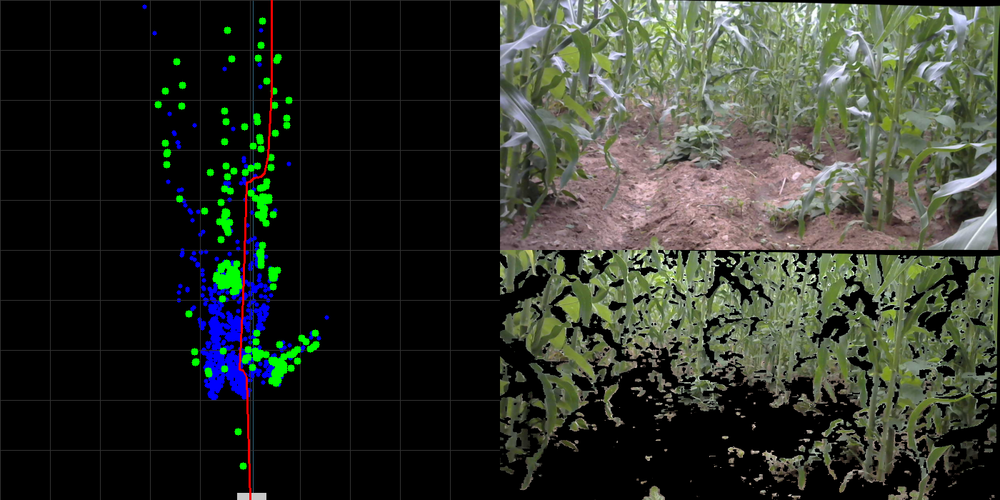
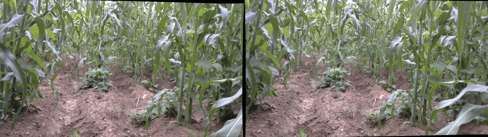
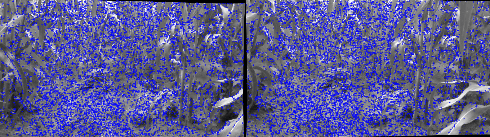
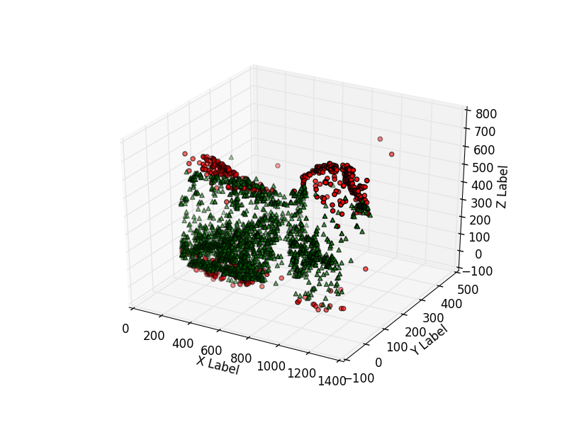

Personal website to show and describe my projects and as a link to contact
with teams interested in the development of new technologies.
C++
GitHub
HTML5
CSS3
JavaScript
Sep 2019 - Dec 2019
Chapingo Autonomous University, Mexico

Machine vision autoguiding system for navigation of agricultural robots
Operating system with C++ nodes for auto-guiding agricultural robots through rows of crops using machine vision.
Designed a path finding algorithm that uses a map of the robot's environment to generate a trajectory.
Tested the system on a robot obtaining a standard deviation of 58 mm in the execution of 3m advance routes.
Currently preparing the repository to publish it on GitHub.
C++
OpenCV
ROS
Microcontrollers
Linux
Jun 2019 - Aug 2019
Tokyo University of Agriculture and Technology, Japan / Chapingo Autonomous University, Mexico


Machine vision algorithm for environment recognition
C++ application for environment recognition by calculating a depth map of the images of a stereo camera using SIFT and SURF algorithms obtaining a precision of 97.95%.
Designed module for reconstruction and maping of the capturated environment.
Currently preparing the repository to publish it on GitHub.
C++
OpenCV
OpenGL
ROS
Linux
Mar 2019 - Jun 2019
Tokyo University of Agriculture and Technology, Japan

Work area recognition for small robots
Python application for work area recognition of an agricultural robot through machine vision.
Increased the precision of plant detection by 3% by designing a filter that reduces the false positives in the OpenCV segmentation.
Currently preparing the repository to publish it on GitHub.
Python3
OpenCV
Linux
Sep 2018 - Dec 2018
Technological University of Peru, Peru
Automatic Greenhouse Prototype
Greenhouse prototype with irrigation and ventilation automatically activated by a microcontroller by reading temperature and soil moisture sensors.
Designed C program for an Atmega328p microcontroller.